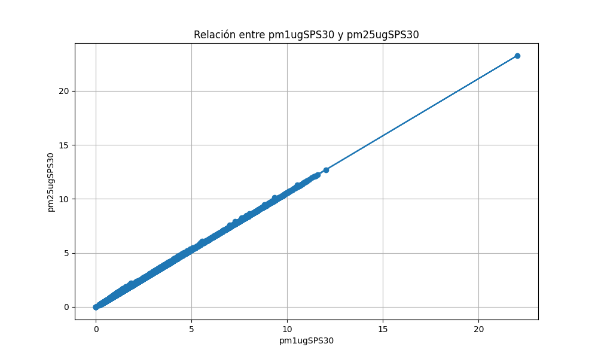

Este repositorio, contiene un proyecto de ciencia abierta que incluye una transformación de datos de un sensor, tambien incluye la generación de gráficos y documentación, todo ello gestionado a través de un proceso de CI/CD en GitLab.
El proyecto se enfoca en analizar un conjunto de datos provenientes de un sensor. Vamos a utilizar Python para transformar estos datos y poder generar visualizaciones significativas.
PracticaGitLab/SensorData.csv: Es el archivo CSV que
contiene los datos del sensor.script_analisis.py: Es el script de Python que realiza
la transformación de datos y genera una gráfica.grafica_sensor_data.png: Es la imagen generada por el
script que muestra una visualización de los datos.El script script_analisis.py hace:
PracticaGitLab/SensorData.csv.pm1ugSPS30 y pm25ugSPS30.grafica_sensor_data.png
en la misma ubicación que el script.import pandas as pd
import matplotlib.pyplot as plt
# Aqui se prodice la carga de los datos
data = pd.read_csv('Vss/SensorData.csv')
# Estas son las columnas que considero significativas
columna_x = 'pm1ugSPS30'
columna_y = 'pm25ugSPS30'
# Creamos la gráfica
plt.figure(figsize=(10, 6))
plt.plot(data[columna_x], data[columna_y], marker='o')
plt.title('Relación entre ' + columna_x + ' y ' + columna_y)
plt.xlabel(columna_x)
plt.ylabel(columna_y)
plt.grid(True)Grafica resultante 